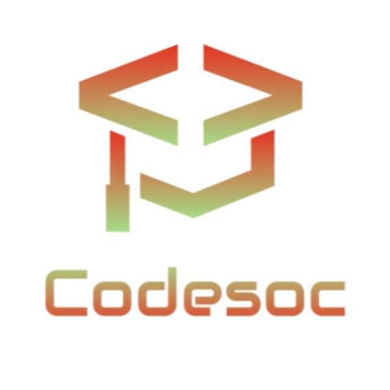

<style>
	.club-title {
		background-color: #1d1d27;
		padding-top: 100px;
	}

	.club-heading {
		color: white;
		text-align: center;
		margin-left: 5%;
		margin-right: 5%;
	}

	.fa-instagram,
	.fa-envelope,
	.fa-linkedin {
		color: white;
	}

	.heading-image {
		display: block;
		margin-left: auto;
		margin-right: auto;
		width: 35%;
	}

	.heading1 {
		background-color: #1d1d27;
	}

	.objectives-list {
		color: white;
		text-align: left;
		margin-left: 5%;
		margin-right: 5%;
	}

	.club-card1 {
		margin: 5%;
		box-shadow: 5px 8px 32px 20px rgba(31, 38, 135, 0.37);
	}

	@media only screen and (max-width: 900px) {
		.heading-image {
			width: 50%;
		}
	}
</style>

<section class="club-title">
	<!-- Logo and title -->
	<div class="container">
		
		<div class="club-heading">
			<h2><b> Coding club of IIIT Raichur </b></h2>
		</div>
	</div>

	<br /><br /><br />

	<!-- what we do -->
	<div class="club-heading">
		<h2><b>What we do?</b></h2>
		<p style="color: white;">
			Updates: Even from our small number We have enthusiastic people working both
			individually and in teams towards various projects, the latest of which is
			IIITR Insights app developed by a mobile dev team of IIITRThe app’s release
			on play store is due, but it was beta tested by many students of our batch
			and received good response. This Besides the above points is to introduce
			the 2020 batch to our club culture through various sessions and also provide
			them guidance from the best of our experience. CodeUp, a series of coding
			contests over the summer was brought up in recent times and it successfully
			conducted three sessions. Converso is a series with three main aims i.e
			knowledge on tech topics, communication skills and rapport with the 2020
			batch.
		</p>
	</div>

	<br /><br /><br />

	<!-- about ebsb section -->
	<div class="club-heading">
		<h2><b>About Codesoc</b></h2>
		<p style="color: white">
			The coding and developers club of IIITR was established in 2019.
		</p>
	</div>

	<br /><br /><br />
	<!-- objectives ebsb section -->
	<div class="club-heading">
		<h2><b>Objectives of Codesoc</b></h2>
		<p style="color: white;">
			To promote coding, development practices, brainstorming ideas, problem-solving,
			exploring various technologies, and facilitating collaborations on projects.
		</p>
	</div>

	<br /><br /><br />
	<!-- coordinators team -->
	<div class="club-heading">
		<h2><b>Coordinators</b></h2>
		<h6>The leaders who make all this possible</h6>
	</div>
	<div class="container">
		<div class="row justify-content-center" style="padding-bottom: 10px;">
			<div class="col-lg-4 col-12">
				<div class="council-cards">
					
					<div class="council-cards-content text-center">
						<h4 style="font-weight: 500">Kushagra Indurkhya<br /></h4>
						<a href="#" target="_blank" class="fa fa-linkedin council-cards-link">&nbsp;</a><a
							href="mailto:cs19b1017@iiitr.ac.in" target="_blank"
							class="fa fa-envelope council-cards-link"></a>
					</div>
				</div>
			</div>
		</div>
	</div>
</section>
